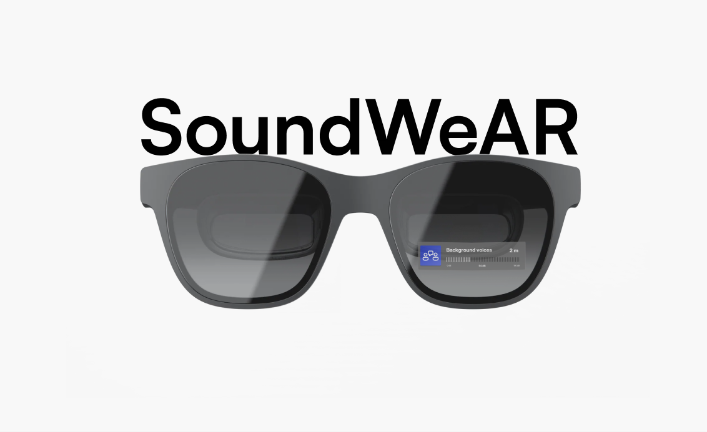

// Accessible AR research
SoundWeAR
An AR system co-designed with Deaf and hard-of-hearing participants. It filters environmental sounds and anchors clear visual cues in the user’s field of view to support outdoor awareness, safety, and control.
- HCI research
- Co-design
- CHI 2026